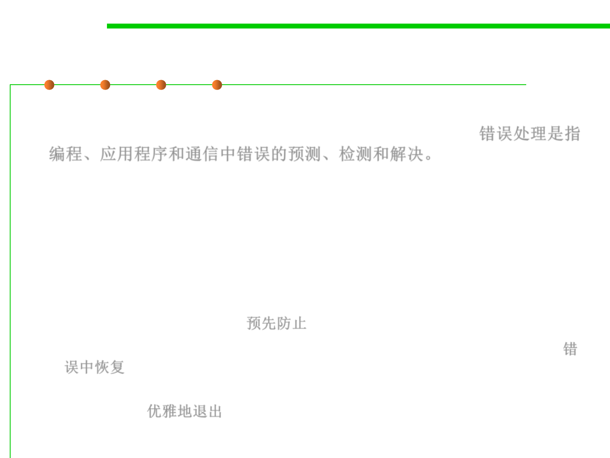

Error handling
7.2 Error and Exception Handling
▪ Error handling refers to the anticipation, detection, and resolution of
programming, application, and communications errors. 错误处理是指
编程、应用程序和通信中错误的预测、检测和解决。
▪ Specialized programs, called error handlers, are available to deal
with errors.
▪ Possible strategies of error handling:
– Forestall errors if possible 预先防止
– Recover from them when they occur without terminating the application, 错
误中恢复
– Gracefully terminate an affected application and save the error information
to a log file 优雅地退出